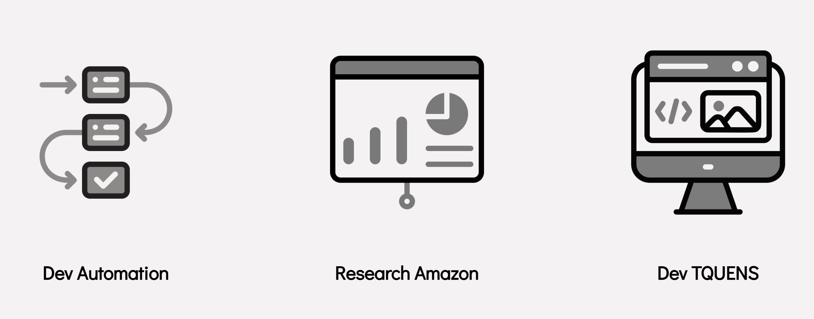
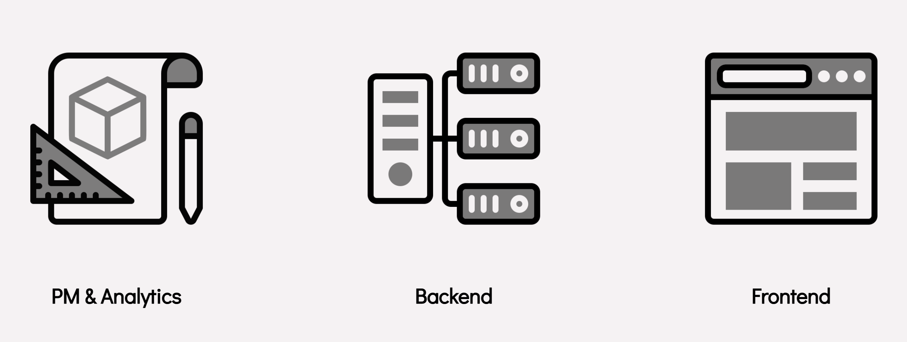
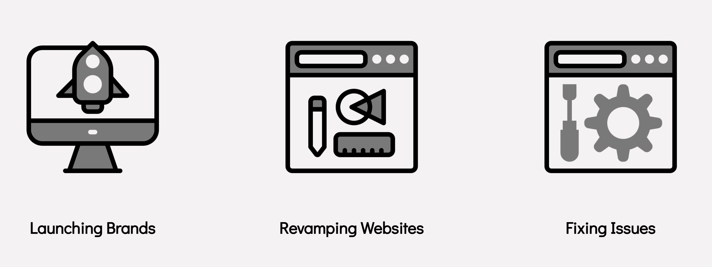
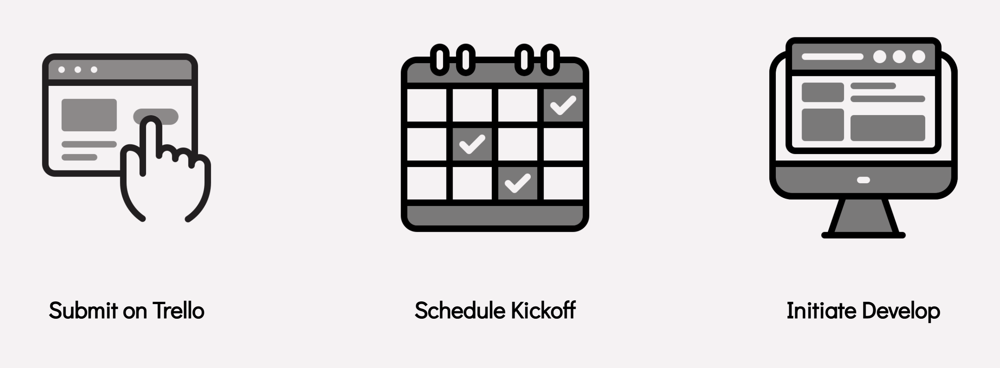
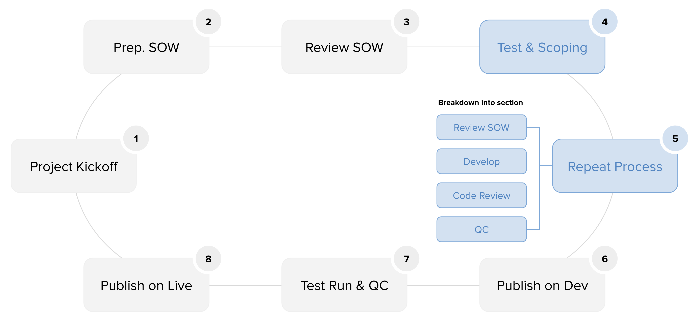

STEP 1
Get TQUENS Context
티퀀스 가이드
티퀀스 로드맵
Get Team Context
Our Team
TQUENS Leader

Huiyeong Kang
-
Product Management

Hoon Kim
-
-

Danny Cho
-
-
-
Full Stack
-
-

Euro Cha
-

Minho Cha
-

Hoijong Kim
-

Isaac Choi
-
-
-
Back End
-
-

Lindsey Wilson
-
-
-
Web Support

Steve Cho
-
-

Taehyun Kim
-
-
What does TQUENS unit do?
How does TQUENS unit work?
What does Web Support unit do?
How does Web Support unit work?
STEP 2
Get Engineering Context
This is how we work
SOW Review
1. Simulate every single components
2. Review structure logic
3. Review stress test for any big data
Develop
1. Layout
2. Frontend (Event Listener)
3. Backend (Connect to DB)
4. Styling
Code Review (If have a new feature)
QC
Documentation
Git
Best practices for using Git
Git has become ubiquitous as the preferred version control system (VCS) used by developers. Using Git adds immense value especially for engineering teams where several developers work together since it becomes critical to have a system of integrating everyone's code reliably. But with every powerful tool, especially one that involves collaboration with others, it is better to establish conventions to follow lest we shoot ourselves in the foot. At TQUENS, we've put together some guiding principles for our own team that make working with a VCS like Git easier. Here are 5 simple rules you can follow:
1. Make clean, single-purpose commits
Oftentimes programmers working on something get sidetracked into doing too many things when working on one particular thing — like when you are trying to fix one particular bug and you spot another one, and you can't resist the urge to fix that as well. And another one. Soon, it snowballs and you end up with so many changes all going together in one commit.
This is problematic, and it is better to keep commits as small and focused as possible for many reasons, including:
- It makes it easier for other people in the team looking at your change, making code reviews more efficient.
- If the commit has to be rolled back completely, it's far easier to do so.
- It's straightforward to track these changes with your ticketing system.
Additionally, it helps you mentally parse changes you've made using git log.
2. Write meaningful commit messages
This is probably the lowest hanging fruit — insightful and descriptive commit messages that concisely describe what changes are being made as part of a commit make life easier for others as well as your future self. A very good heuristic for writing good commit messages is this:
[Module Name] / [Type] Summary
[Product Review] / [Maintenance; Corrective] Update Rating Filter in Grid
* [Type] New Dev(New Development), Maintenance, Refactor, Style, or Test.
* There are 4 types of maintenance dev which are Corrective, Adaptive, Perfective, and Preventive
* Summary in present tense.
Learn more about Maintenance types
If you're using a ticketing system, you should also include the ticket id in the description. A number of modern VCS hosting systems, like GitHub, auto-link the commits to the issues.
3. Commit early, commit often
Git works best, and works in your favor, when you commit your work often. Instead of waiting to make the commit perfect, it is better to work in small chunks and keep committing your work. If you are working on a feature branch that could take some time to finish, it helps you keep your code updated with the latest changes so that you avoid conflicts.
Also, Git only takes full responsibility for your data when you commit. It helps you from losing work, reverting changes, and helping trace what you did when using git-reflog.
4. Don't alter published history
Once a commit has been merged to an upstream default branch (and is visible to others), it is strongly advised not to alter history. Git and other VCS tools to rewrite branch history, but doing so is problematic for everyone has access to the repository. While git-rebase is a useful feature, it should only be used on branches that only you are working with.
Having said that, there would inevitably be occasions where there's a need for a history rewrite on a published branch. Extreme care must be practiced while doing so.
5. Don't commit generated files
Generally, only those files should be committed that have taken manual effort to create, and cannot be re-generated. Files can be re-generated at will can be generated any time, and normally don't work with line-based diff tracking as well. It is useful to add a .gitignore file in your repository's root to automatically tell Git which files or paths you don't want to track.
Publish Rule
Master > Development > Module (Parent) > Module-Author > Mudule-Author-Feature
* 작업하던 개인 Branch를 Parent Module로 Merge한 이후 Senior Developer과 컨펌 * Module Branch Confirm 이후 Development branch merge and push * Dev Confirm 이후 Master branch merge and push
Ex) Master (check each modules in order to check if published properly) > Dev (Confirm Needed) > Dashboard (Confirm Needed) > Dashboard-Minho > Dashboard-Minho-Card
Interface (Component) 개발 요지 설명
Component Design Reference
Storybook
Style Guide
Component Design Reference
STEP 3
Get Working Context
In this final step, you are going to start clone development.
SOW Template 제공 및 신규 개발자가 코드 리뷰와 함께 작성
SOW Review
Environment Setup
Module Details
Currently we have 8 modules. Click each module in order to see the details.
Cloning Dev
** DO NOT START CODING RIGHT AWAY **
Code Review